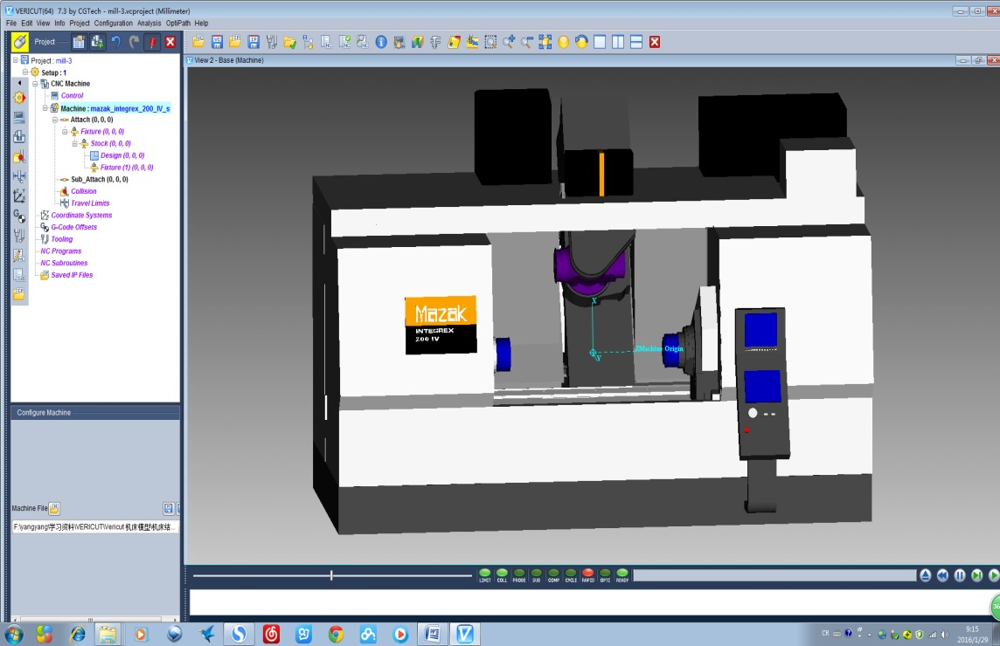
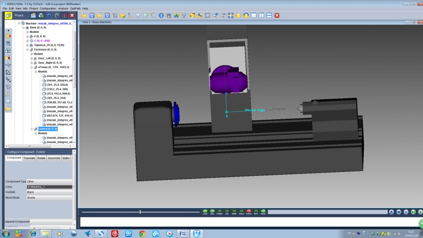

本工作室目前主要承担以下项目的培训工作，可以根据自己的兴趣或者工作，进行相关项目的选择， 具体培训内容可以参看本网站关于机器人学习的详细类别。目前所有课程均由本人亲自承担！如有问题可以随时和本人联系。
经过多年教学实践，本工作室主要采用一对一，一对二的方式，上课主要是直接进入，这样效果比较好。
| 内容 | 人数 | 价格 | 备注 |
| UG三维建模
UG工程图 |
1 | 200/课时 | |
| 2-5 | 220/课时 | ||
| 6-10 | 240/课时 | ||
| UG装配模块
UG运动仿真 UG数控编程 加工仿真 |
1 | 260/课时 | 送发那科0i系统后处理 |
| 2-5 | 280/课时 | ||
| 6-10 | 300/课时 | ||
| UG数控编程4轴 | 1 | 300/课时 | 如需后处理，需要专门定制，费用另计 |
| 2-5 | 320/课时 | ||
| 6-10 | 340/课时 | ||
| UG数控编程5轴 | 1 | 360/课时 | 如需后处理，需要专门定制，费用另计 |
| 2-5 | 380/课时 | ||
| 6-10 | 400/课时 | ||
| 加工中心、数控车机床实操 | 1 | 320/课时 | 如需后处理，需要专门定制，费用另计 |
| 2-5 | 340/课时 | ||
| 6-10 | 360/课时 | ||
| Vericut学习 | 1 | 360/课时 | 如需后处理，需要专门定制，费用另计 |
| 2-5 | 380/课时 | ||
| 6-10 | 400/课时 | ||
| CIMCO手动编程 | 1 | 260/课时 | |
| 2-5 | 280/课时 | ||
| 6-10 | 300/课时 | ||
| 数控编程 | 同上 | 同上 | |
| 机械制造工艺 | 同上 | 同上 | |
| 机器人技术基础及工业机器人操作与编程(初级) | 1 | 320/课时 | 主要面向ABB机器人， 学习RobotStudio软件 |
| 2-5 | 340/课时 | ||
| 6-10 | 360/课时 | ||
| 工业机器人控制与编程(中级) | 1 | 360/课时 | 主要面向ABB机器人， 学习RobotStudio软件 |
| 2-5 | 380/课时 | ||
| 6-10 | 400/课时 | ||
| 工业机器人的离线编程和仿真 | 1 | 380/课时 | 主要面向ABB机器人， 学习RobotStudio软件 |
| 2-5 | 400/课时 | ||
| 6-10 | 420/课时 | ||
| ABB工业机器人的实操 | 1 | 400/课时 | 目前只能提供ABB机器人 |
| 2-5 | 420/课时 | ||
| 6-10 | 440/课时 |
本人高校教师，多年来在高校从事于本科、研究生的教学科研工作，对当前的大学教育方式方法有很深刻的理解，当然也对其中很多方式方法并不满意。 在英国我发现传统的学徒制依然存在，而且效果非常好，所以本工作室长期以来一直坚持采用手把手的教学方法以及项目制的学习方法用于培训， 拒绝大规模的标准化，生搬硬套灌输式的培训。传统的学徒制即，徒弟在师傅指导下习得知识或技能的传艺活动，这种活动是一种高度情境性的学习方式， 学徒在真实的工作场所中观察师傅的实作，感知和捕捉师傅的知识和技艺，然后在师傅的指导下进行实作，逐渐学会师傅的技能。
由于当前中国的制造企业不愿意培养人才，更多的是挖人才，所以造成了当前制造业存在很多问题。 本工作室的培训理念是“启发思考，联系实际，高度重视实践和应用能力”。
经过多年教学实践，本工作室主要采用一对一，一对二的方式，这样可以积极的互动交流，学习效果比较好。本工作室已经培训过来自企业、研究所的工人师傅， 工艺师等30余人，工人师傅主要培养方式向是工艺员及数控编程人员，就业后可以达到从分析零件图纸-建模-工艺-编程-仿真-实操一条龙的技能； 工艺员主要培养方向是熟练操作三维CAD设计软件以及相关仿真，进行零件设计，以及数控编程及仿真。经本工作室培训，即可找到满意、对口工作。 由于隐私问题，不便透露培训人员的个人信息。
上课主要是简单讲解基本理论，以项目制的方式进行培训，上课进行理论和实践讲解，课后布置完成相关作业，中间随时可以提问，拒绝长篇大论。 重点在于学生的思维训练和动手能力的培养，因为长期与西安及周边的研究所企业合作，因此可以提供丰富的学习与实践资源。 培训就在本工作室（西安石油大学内）进行，环境宽松、优雅。
欢迎大家参观、指导。
根据企业不同的软件和硬件，针对性的进行一些定制，有软件类，比如特殊结构机床仿真结构类型的定制属于特殊开发类型。 本工作室长期与一些企业和研究所建立合作关系，针对特殊机床结构以及特殊控制器进行机床模型的构建，以及配合相关机床的控制系统， 开发相对应的基于UG的后处理程序，然后配合Vericut所建立的机床模型进行加工代码的仿真。
通过仿真有效地避免机床干涉与碰撞，使用VERICUT可在产品实际加工之前、模拟NC加工过程，以检测刀具路径中可能存在的错误，并可用于验证G代码和CAM软体输出结果。仿真后能对切削模型尺寸分析，还能对切削速度进行优化，并输出仿真结构模型，以及生产工艺文件报表。大大提高了生产效率和效益，降低了企业的研发成本以及数控机床损坏的可能。
| 类型 | 项目名称 | 项目内容 | 备注 |
| 定制数控程序后处理程序类 | 基于UG的FANUC/Siemens车床后处理 | 常见的前置和后置刀架，配备FANUC/Siemens车床，使用UG开发的后处理，应用非常成熟 | 应用非常成熟 |
| 基于UG的FANUC/Siemens系统3轴立式/卧式铣床后处理 | 常见的3轴立式/卧式铣床，配备FANUC/Siemens系统，使用UG开发的后处理，应用非常成熟 | 应用非常成熟 | |
| 基于UG的FANUC/Siemens系统4轴立式/卧式铣床后处理 | 常见的3轴立式铣床外加一个摇篮或者数控分度头的四轴加工中心，配备FANUC/Siemens系统，使用UG开发的后处理，应用非常成熟。 | 应用非常成熟 | |
| 基于UG的FANUC/Siemens系统5轴双转台铣床后处理 |
|
开发，并成功应用 | |
| 基于UG的FANUC/Siemens/ Heidenhain |
|
开发，并成功应用 | |
| 基于Vericut机床模型定制 | 3-Axis 铣床: HARDINGE_VMC1000II | 随着机床结构的复杂程度提高，对于生成的数控程序的检验就越发严格检验，在实际加工之前必须要进行严格的程序检验，以避免机床干涉与碰撞。Vericut提供了关于Multi-Axis 仿真与验证四轴与五轴铣削、钻削、车削和车铣复合加工。在复杂机床的切削仿真方面具备最为强大的功能，VERICUT-OptiPath 刀具路径最佳化。一次NC机床撞机可能花费数万元，除了机床损坏外，而且延误整个产品开发计划，VERICUT能多可用于检测机床，控制器在指令上的冲突避免机床碰撞。VERICUT在电脑上模拟的机床加工过程与工厂的机床传动完全一样。 | |
| 常见后置刀架2轴车床 |

|
||
| 3-Axis铣床: MAZAK_nexus510a |

|
||
| 4-Axis 铣床: MAZAK_integrex_200_IV_s |  | ||
| 5-Axis 铣床: Doosan _vc630 | |||
| 5-Axis 铣床: MAZAK_htc_4000 | |||
| 5-Axis铣床: MAZAK_variAxis730 | |||
| 5-Axis 铣床:Mikron_UCP800 | |||
| 车铣复合机床：MAZAK_integrex_e650h_II_2000u |  | ||
| WFL的M35-G车铣复合加工中心 |
本工作室长期与西安高校和研究所，科研院所进行与机械相关的材料方面的实验，所有实验均由长期从事本实验的专门工作人员承担，主要试验项目，三坐标测量，材料检测（金相分析，力学性能，拉、压、扭转试验，冲击试验等），化学分析（CS分析，直读光谱仪），无损检测（X射线探伤，磁粉探伤，应力应变测试，超声波探伤），产品检测（阀门压力试验、动力钳实验、阀门燃烧试验等），对于每一个实验的具体包括：确定实验方案，包括理论依据、实验方法、具体参数设计、选用仪器和具体操作步骤等。以研究论文的形式提交报告，包括摘要，引言，实验原理与内容，实验方案，操作步骤，实验现象分析、误差评估、数据分析与处理，结论等内容。
| 类型 | 项目名称 | 项目内容 | 备注/设备 |
| 材料检测 | 金相分析 |
|
设备：切割机、砂轮机、砂纸、镶嵌机、抛光机、光学显微镜、视频采集卡、金相分析软件等 |
| 拉、压试验 | 用于各种材料、半成品及成品的抗拉强度、抗压强度及伸长量 | 1000吨拉压力试验机 | |
| 弯曲、扭转试验 | 测定材料承受弯曲载荷时的力学特性的试验； 测定材料抵抗扭矩作用，测定脆性材料和塑性材料的强度和塑性，对于制造经常承受扭矩的零件如轴、弹簧等材料常需进行扭转试验 | SANS微机控制电子万能试验机；金属材料扭转试验机和非金属材料扭转试验机s | |
| 疲劳试验 | 用于测定金属及其合金材料在室温状态下的拉伸、压缩或拉、压交变负荷的疲劳性能 | 高负荷、高频率疲劳试验机 | |
| 室温/低温冲击试验 | |||
| 硬度试验 | |||
| 断口分析 | |||
| 金属材料缺陷分析 | |||
| 材料性能综合评估 | |||
| 化学分析 | 钢铁、金属检测 | 应用光电转换接收方法作多元素同时分析的发射光谱仪器 | 直读光谱仪 |
| 无损检测 | X射线探伤 | 利用 X射线或γ射线在穿透被检物各部分时强度衰减的不同，检测被检物中缺陷的一种无损检测方法。 | X射线机，X射线胶片，增感屏，线型象质计，出无损检测实验报告 |
| 磁粉探伤 | 磁粉探伤是用来检测铁磁性材料表面和近表面缺陷的一种检测方法。当工件磁化时，若工件表面有缺陷存在，由于缺陷处的磁阻增大而产生漏磁，形成局部磁场，磁粉便在此处显示缺陷的形状和位置，从而判断缺陷的存在。 | 磁粉探伤仪，出磁粉探伤实验报告 | |
| 超声波探伤 | 超声波探伤是利用超声能透入金属材料的深处，并由一截面进入另一截面时，在界面边缘发生反射的特点来检查零件缺陷的一种方法，当超声波束自零件表面由探头通至金属内部，遇到缺陷与零件底面时就分别发生反射波来，在萤光屏上形成脉冲波形，根据这些脉冲波形来判断缺陷位置和大小。 | A型显示脉冲反射式超声波探伤仪 | |
| 应力应变测试 | 反应材料在外力作用下发生的脆性、塑性、屈服、断裂等各种形变过程。 | 应力应变测试系统 | |
| 产品检测 | 阀门压力试验 | 严格按照阀门压力试验检测规范 | 闸阀、截止阀、止回阀、旋塞阀、球阀、蝶阀、隔膜阀等的压力试验。 压力试验的项目包括：
|
| 阀门耐火试验 | 严格按照阀门耐火试验规范，建立暴露在燃烧条件下试验和评价阀门的承压性能的要求。 | 用在某些易着火场合的阀门由于存在发生火灾的潜在危险，往往在这些场合使用的阀门都应做特殊的设计使阀门在遭受一定时间的火烧后仍具有一定的密封 性能及操作性能 | |
| 动力钳试验 | 利用修井机动力操作的机械上、卸丝扣工具的修井工具，具体项目包括：空载试验、夹紧试验、液压系统密封性能试验、噪声试验、载荷试验、可靠性试验。 | 均有相关检测设备，并出具实验报告。 | |
| 井口井控试验 |
本数控培训工作室成立于2013年，位于西安南郊高校内，主要面向西安及周边地区的企业和个人，从事UG、数控编程、 实操及机器人的培训以及实验测试、数控类项目开发服务。提供面向用户个性化需求的UG的CAD/CAM、数控工艺、编程、 实操及整个制造流程的培训和技术咨询，面向企业及个人进行相关培训服务工作。经过这些年的技术积累及市场开拓， 已具备一定的数控技术领先及培训优势，面向数控领域已经培训了30余人，他们大多来自一线生产工人，经过本工作室培训， 目前已经完全掌握了，从阅读分析图纸、UG三维建模、数控工艺编制、数控程序设计、仿真、工装准备、程序调试及机床实操、 检测等全部技术，已经成为各个企业数控加工方面的核心人才，受到重用。还有一部分学员一直从事传统工艺编制，经过本工作室在UG的CAD， 装配及运动仿真方面的培训，已经成功转行到产品设计或者数控编程及仿真方面的工作，由于这些学员本身具备了很好的工艺， 在进行产品设计时游刃有余，设计的产品工艺性能良好，提升了企业产品设计制造的效率与实力，为企业节省了大量的成本，企业反馈良好。 目前与西安周边的企业与研究所联系紧密，主要为其提供数控及UG方面的培训，以及复杂机床（五轴加工中心及车铣复合机床）的技术服务， 为企业输送了大量的高级数控人才。
工作室理念：培训方式学徒制，培养企业真正所需人才。